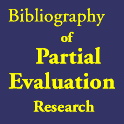

|  |
ACM SIGPLAN Workshop on Partial Evaluation and Semantics-Based Program Manipulation (PEPM '00)
Boston, Massachusetts, USAJanuary 22-23, 2000
Program
Manuvir Das"Static Analysis of Large Programs: Some Experiences (Abstract of Invited Talk)"
ACM Digital LibraryMathias Braux and Jacques Noyé
"Towards Partially Evaluating Reflection in Java"
ACM Digital LibraryEijiro Sumii and Naoki Kobayashi
"Online-and-Offline Partial Evaluation: A Mixed Approach (Extended Abstract)"
ACM Digital LibraryBernd Grobauer and Zhe Yang
"The Second Futamura Projection for Type-Directed Partial Evaluation"
ACM Digital LibraryFrank Pfenning
"On the Logical Foundations of Staged Computation (Abstract of Invited Talk)"
ACM Digital LibraryWalid Taha
"A Sound Reduction Semantics for Untyped CBN Mutli-Stage Computation. Or, the Theory of MetaML is Non-trival (Extended Abstract)"
ACM Digital LibraryJohn P. Gallagher and Julio C. Peralta
"Using Regular Approximations for Generalisation During Partial Evalution"
ACM Digital LibraryGiorgio Levi and Fausto Spoto
"Non Pair-Sharing and Freeness Analysis Through Linear Refinement"
ACM Digital LibraryWei-Ngan Chin and Siau-Cheng Khoo
"Calculating Sized Types"
ACM Digital LibraryYanhong A. Liu and Scott D. Stoller
"From Recursion to Iteration: What are the Optimizations?"
ACM Digital LibraryJonathan Walpole
"Operating Systems Specialization: Experiences, Opportunities and Challenges (Abstract of Invited Talk)"
ACM Digital LibraryNaoki Kobayashi
"Type-Based Useless Variable Elimination"
ACM Digital LibraryBrian R. Murphy and Monica S. Lam
"Program Analysis with Partial Transfer Functions"
ACM Digital LibraryBernhard Scholz, Johann Blieberger and Thomas Fahringer
"Symbolic Pointer Analysis for Detecting Memory Leaks"
ACM Digital Library

Last modified: Monday, February 16th, 2009 6:22:13pm
HTML generated using WebIt!.
HTML generated using WebIt!.